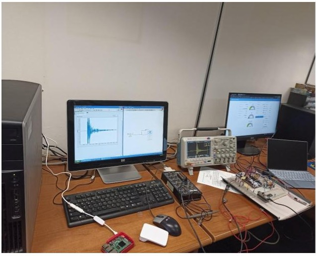
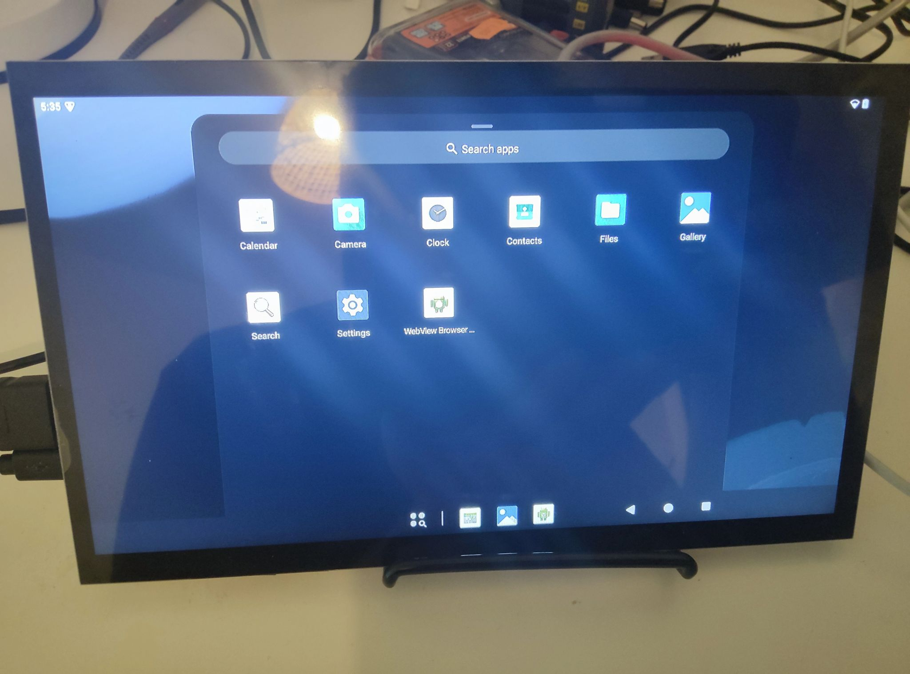
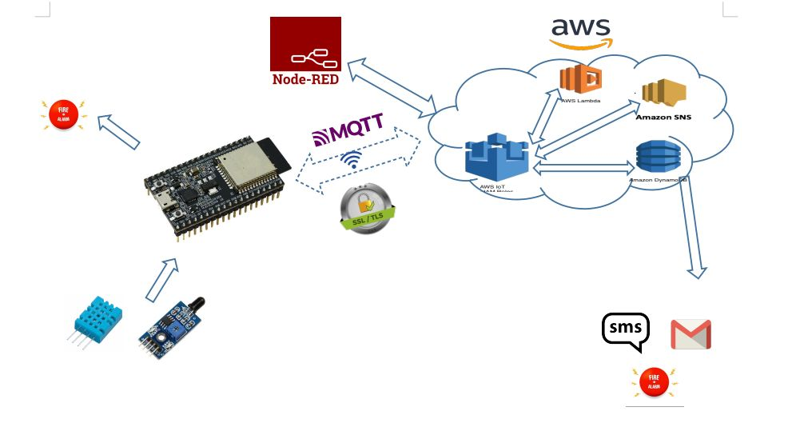
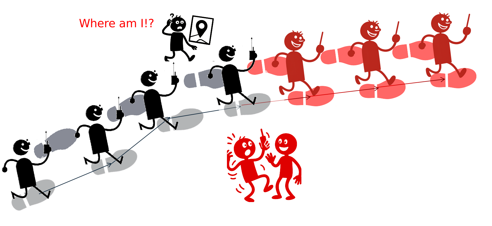
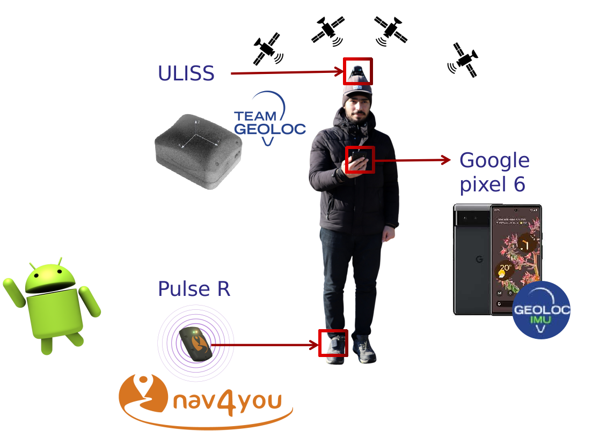
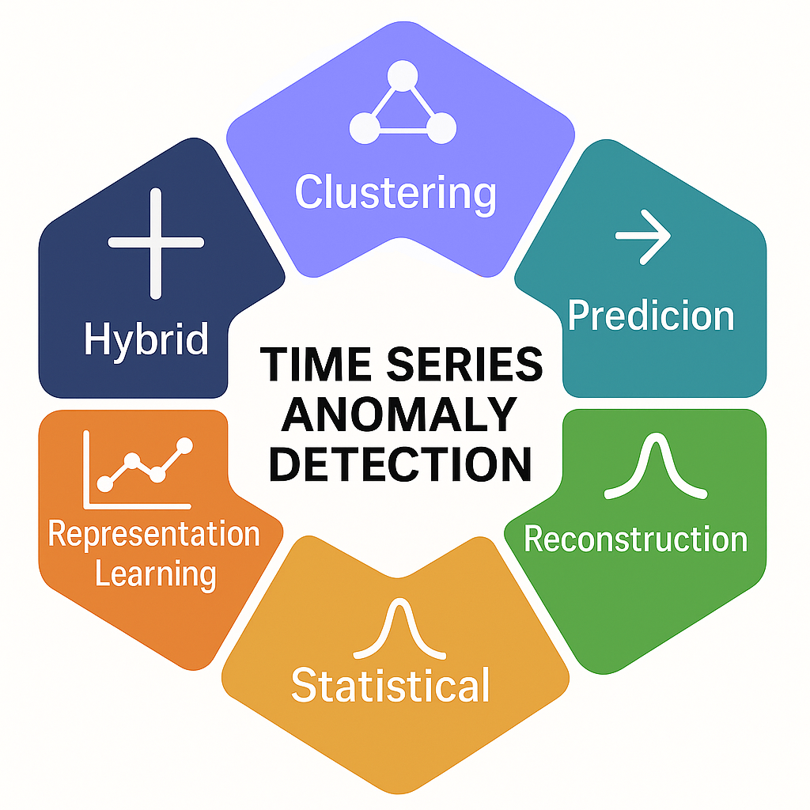
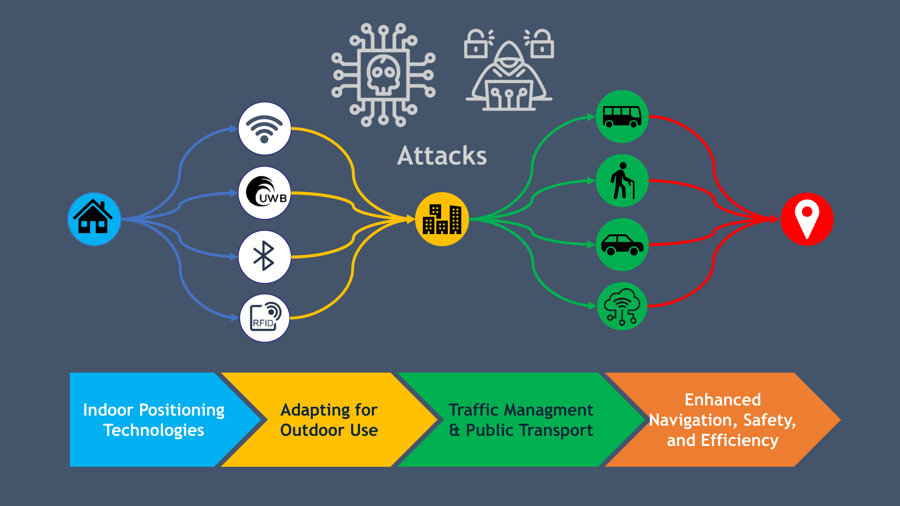
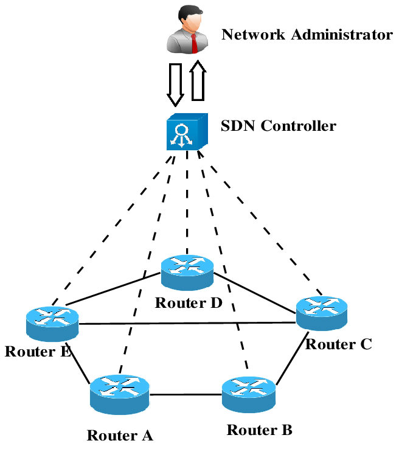
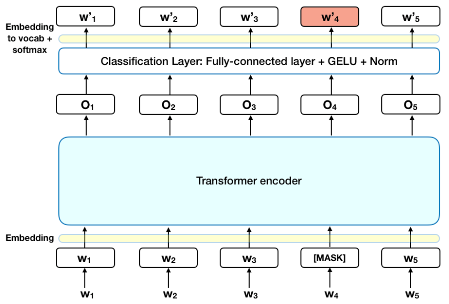

Projects
Embedded Systems & Firmware

STM32MP157 Yocto BSP
Yocto BSP, Custom Linux distribution for STM32MP1: complete boot chain (TF-A, OP-TEE, U-Boot), custom Yocto layers, drivers (GPIO, I2C, SPI, UART), device tree overlays, OTA system via SWUpdate with A/B partition scheme.
View on GitHub
Truck Monitoring BSP (2 versions)
Yocto BSP in two versions (STM32MP157 and NXP i.MX93) for truck monitoring: CAN bus driver, 5G modem integration, GNSS drivers, FreeRTOS on Cortex-M, KAS configuration, full boot chain customization.

Muzziball — Yocto BSP, Security & OTA
Complete Yocto distribution for Muzziball on STM32MP157: secure boot, OTA (SWUpdate), PureData integration for real-time audio processing, IMU, microphone, speaker, LED matrix, and LiPo battery drivers. Production-ready secure deployment.
Muzziball — Embedded C++ Server
Mini C++ server on STM32MP157-DK orchestrating serial communication with IMU, LiPo battery, microphone, speaker, and LED matrices. Bridge between PureData, BLE, and Wi-Fi.

Linux IIO Kernel Driver — MPU-6050
IIO driver for MPU-6050 IMU sensor: I2C communication, interrupt handling, sysfs interface for real-time accelerometer and gyroscope data acquisition.
GNSS Serdev Driver — u-blox NEO-M8N
Linux kernel driver for u-blox GNSS receiver: NMEA parsing, position data exposure via the kernel subsystem.

TP-Link Router Reverse Engineering
Hardware reverse engineering of MT7628 SoC-based router: UART/SPI interface identification, SPI flash firmware extraction using flashrom, Binwalk analysis of firmware structure and filesystem.
View on GitHub
Wireless Crack Detection Sensor (MSc Thesis)
Complete wireless sensor system for structural crack detection: hardware design, edge device firmware, communication protocols, and cloud integration.

Design a Custom Android ROM
Development of a custom Android ROM for embedded devices: kernel modification, system integration, and performance optimization.

Design a Secure IoT System Using ESP32
Development of a secure IoT system for smart home applications: hardware design, network security, and data privacy, Encrypted Certificate, Encrypted Data.
PhD Research Projects

Anomaly Detection for IMU-Based Pedestrian Navigation
Physics-informed anomaly detection framework for inertial navigation systems. Autoencoder-based models (AE, VAE, USAD) for detecting sensor faults and navigation anomalies in real-time on resource-constrained embedded devices.
View on GitHub
5G LOS/NLOS Detection Using USAD Models
Unsupervised anomaly detection for 5G channel impulse response (CIR) classification. USAD-based models for distinguishing line-of-sight from non-line-of-sight conditions to improve 5G positioning accuracy.
View on GitHub
GNSS LOS/NLOS Classification Using Autoencoders
Autoencoder-based classification of GNSS signal conditions for urban positioning. Distinguishing line-of-sight from multipath-affected signals to improve satellite navigation in challenging environments.

Step Detection Enhanced by Anomaly Filtering
Improved pedestrian step detection algorithm using anomaly filtering on IMU signals. Physics-informed approach to filter out abnormal sensor readings before step counting, achieving higher accuracy in real-world walking scenarios.

Time-Series Anomaly Detection Review
Comprehensive survey of 43+ papers on time-series anomaly detection methods for sensor data. Systematic comparison of models, metrics, and methodologies across domains including IoT, industrial monitoring, and navigation systems.

GNSS Threat Landscape Analysis
Investigation of the escalating GNSS threat crisis through real-world case studies spanning aviation, maritime, and military domains. Comprehensive analysis of jamming, spoofing, and meaconing risks to existing positioning systems.

GNSS Attack Dataset — Jammertest 2024
Open dataset of GNSS signals under jamming, spoofing, and meaconing conditions collected during the Jammertest 2024 campaign. Published on Zenodo with 845+ views and 227+ downloads for research reproducibility.
Other Projects

SDN Load Balancing for Video Streaming
SDN-based load balancing system for face recognition video streaming over wireless networks. Dijkstra and Bellman-Ford algorithms on RYU SDN controller with OpenFlow switches, simulated in Mininet-WiFi with SUMO for urban vehicle mobility.
View on GitHub
Contradictory Text Analysis — RoBERTa NLP
Natural Language Inference (NLI) using RoBERTa transformer model. Classifies premise-hypothesis text pairs into entailment, contradiction, or neutral categories. Achieved 82% test accuracy with fine-tuned Hugging Face Transformers pipeline.
View on GitHub
Breast Cancer Detection (RSNA)
Deep learning pipeline for breast cancer screening from mammography images using the RSNA dataset. CNN-based classification model for automated medical image analysis.
View on GitHub